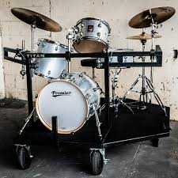
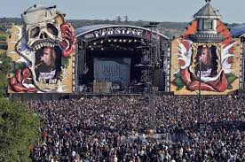

Passion
My whole life, I have done music as a hobby in some form. Instruments, Production, Education, Composition; anything you can think of, I have probably done. It started with tunes in the car and playing on a toy drumset and has evolved into defining most of my to something relating to music. I genuinely cannot think of any other aspect of reality that has captivated me with such a massive grasp for my whole life, let alone a single moment. I often say it is my favorite thing in life.
(And even without activiely doing a music hobby, I am always listening to it. Shoutout to my >100k minutes on Spotify alone last year and around the same per year since I was allowed access to Pandora in 2014).
Experiences
Current: Tech Director for USC's Student Radio, KXSC. I fix any technological problem in the broadcast room and help plan live music events, eberything from decorations to artists to venues. I also get to have an hour long Radio DJ set, where I do themed sets around music I enjoy, with the occasional comment from myself.
Past: Sound Engineer for Lone Star High School Marching Band, Worker for Global Inheritance at Coachella 2023, Attendee at 30+ concerts and 7 festivals in the past 2 years alone, and avid percussionist/guitarist.
Future
I hope to work for more festivals in the future, as it's so fun to meet people who are also in a shared space for live music (especially when I don't have to pay for the ticket :D). I'm thinking Coachella 2024 and any other SoCal festival that is weekend based. Maybe even a metal festival too, like HellFest in France.
I also hope to get a lot better at drumming. I was pretty good in high school but haven't touched it in the 2 1/2 years since I graduated, so I definitely need to touch up.